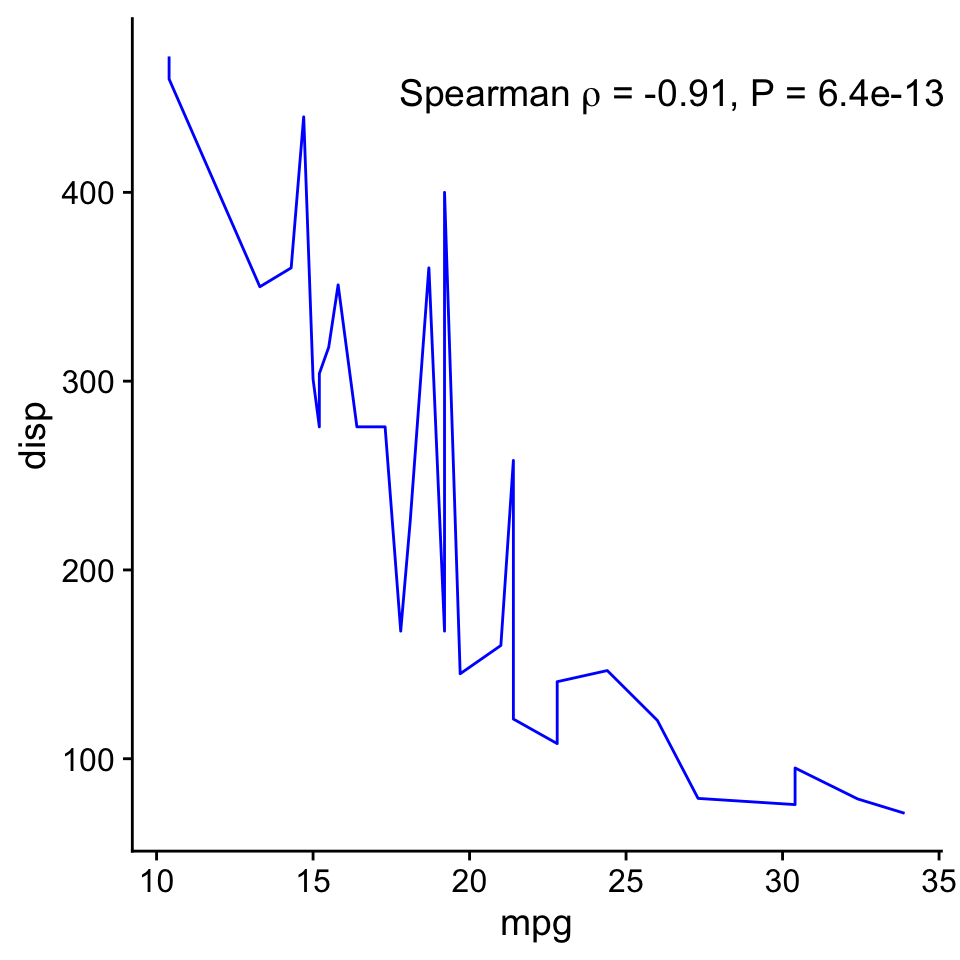
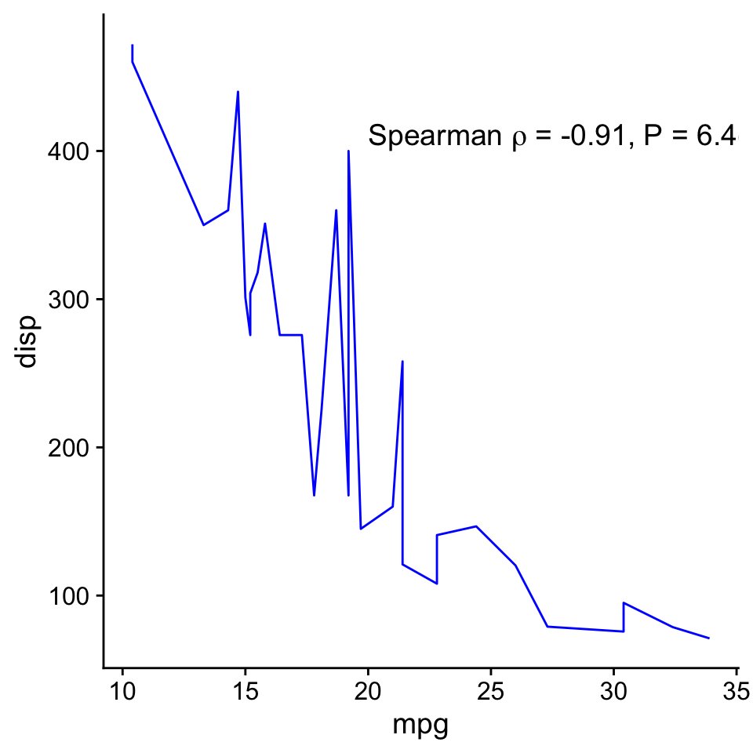
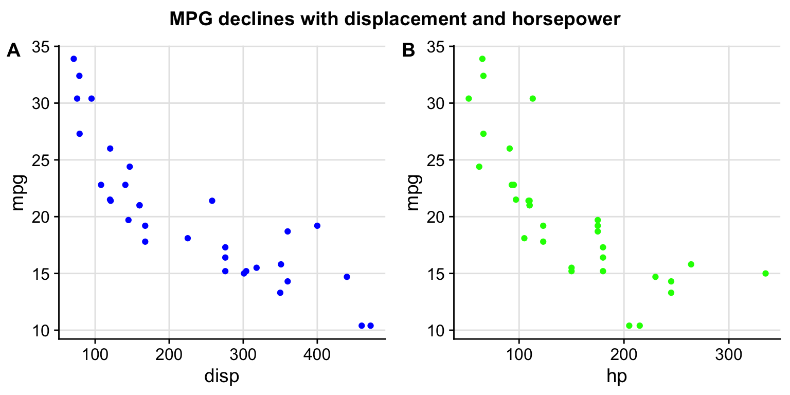
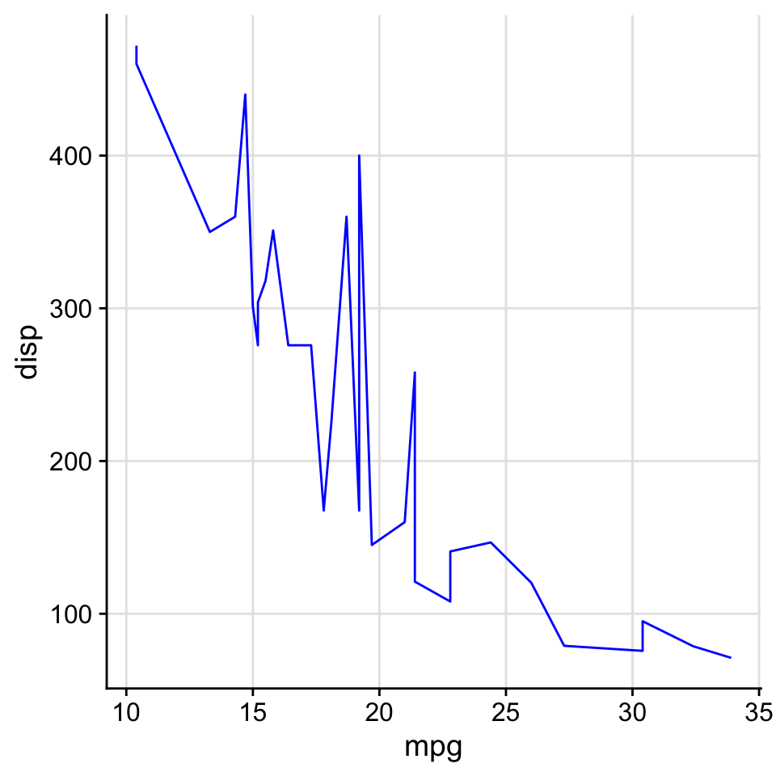
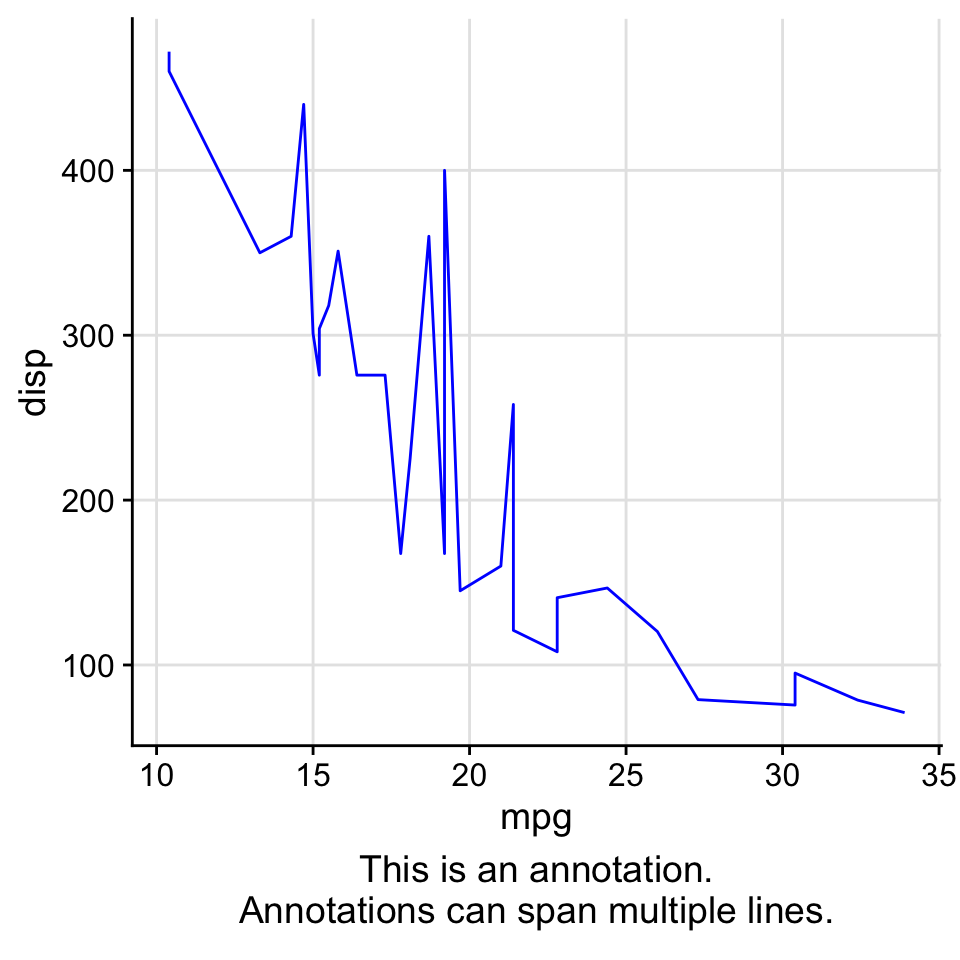
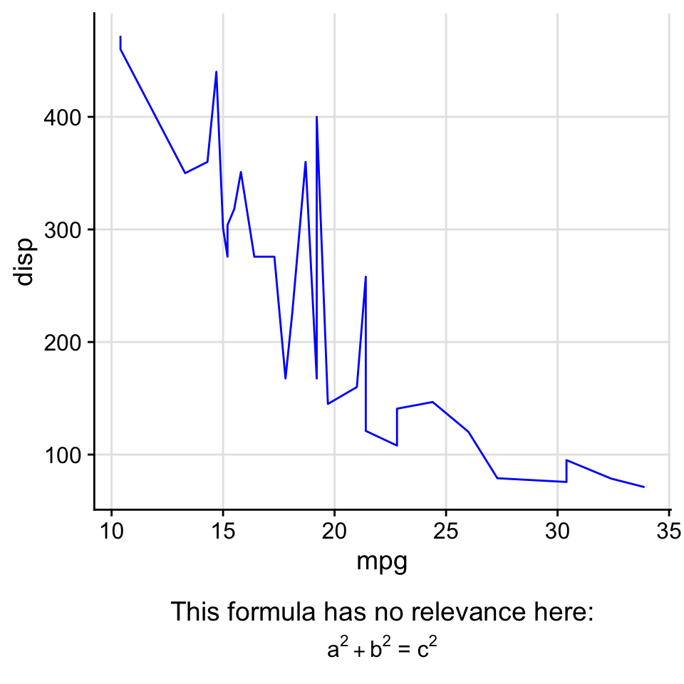
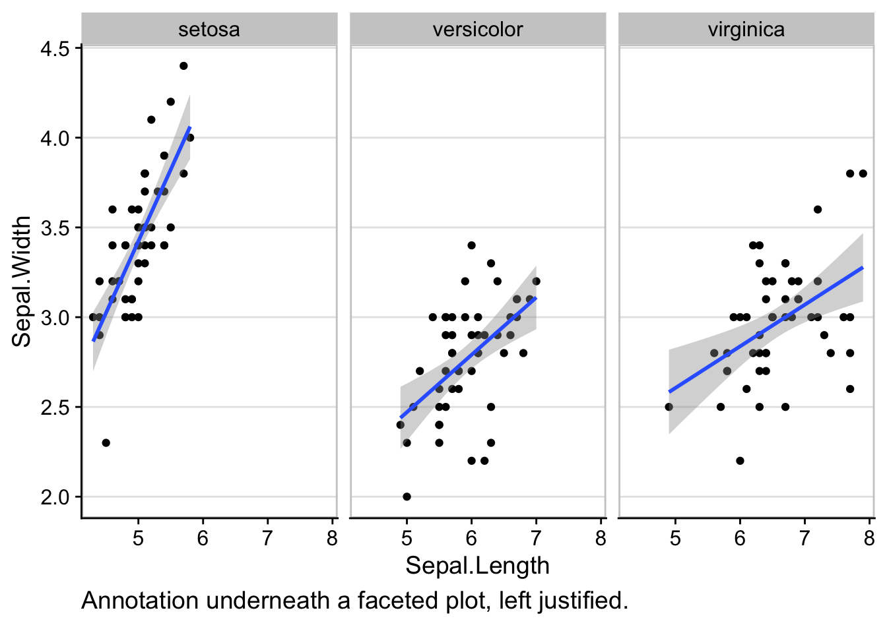

Plot annotations
Claus O. Wilke
2018-12-27
Source:vignettes/plot_annotations.Rmd
plot_annotations.RmdThe cowplot package provides a variety of functions to annotate plots, including annotations underneath the plot, mathematical expressions inside plots, and joint titles for combined plots. Note that as ggplot2 gains more of this functionality natively (e.g. as of version 2.2.0), we recommend to use the ggplot2 methods rather than the cowplot methods. Any functionality that is duplicated between ggplot2 and cowplot may be removed from future versions of cowplot.
Annotations with mathematical expressions
We commonly want to annotate plots with mathematical expressions, for example when we want to show the result from a statistical test inside the plot. For this purpose, cowplot defines the function draw_label(), which can add arbitrary test or mathematical expressions to a plot.
Depending on the application, we may want to specify the location of the label either in absolute coordinates (independently of the data plotted) or in coordinates relative to the data shown. Both uses are supported by draw_label(). For the former, we use draw_label() in conjunction with ggdraw():
p <- ggplot(mtcars, aes(mpg, disp)) +
geom_line(colour = "blue") + theme_half_open()
c <- cor.test(mtcars$mpg, mtcars$disp, method='sp')
label <- substitute(paste("Spearman ", rho, " = ", estimate, ", P = ", pvalue),
list(estimate = signif(c$estimate, 2), pvalue = signif(c$p.value, 2)))
# adding label via ggdraw, in the ggdraw coordinates
ggdraw(p) + draw_label(label, .7, .9)
For the latter, we add draw_label() directly to the plot:
# adding label directly to plot, in the data coordinates
p + draw_label(label, 20, 400, hjust = 0, vjust = 0)
Joint plot titles
When we combine plots with plot_grid(), we may want to add a title that spans the entire combined figure. While there is no specific function in cowplot to achieve this effect, it can be simulated easily with a few lines of code:
# make a plot grid consisting of two panels
p1 <- ggplot(mtcars, aes(x = disp, y = mpg)) +
geom_point(colour = "blue") +
theme_half_open() + background_grid(minor = 'none')
p2 <- ggplot(mtcars, aes(x = hp, y = mpg)) +
geom_point(colour = "green") +
theme_half_open() + background_grid(minor = 'none')
p <- plot_grid(p1, p2, labels=c('A', 'B'))
# now add the title
title <- ggdraw() +
draw_label("MPG declines with displacement and horsepower",
fontface = 'bold')
plot_grid(title, p, ncol = 1, rel_heights = c(0.1, 1)) # rel_heights values control title margins In the final plot_grid line, the values of rel_heights need to be chosen appropriately so that the margins around the title look correct. With the values chosen here, the title takes up 9% (i.e., 0.1/1.1) of the total plot height.
Annotations underneath plots
The function add_sub() can be used to add annotation text underneath a plot. This functionality is now mostly superseded by the caption argument to the labs function in base ggplot2, but add_sub() is retained in cowplot for backwards compatibility. For new plots, I suggest you try caption first and use add_sub() only when caption doesn’t provide the desired result.
To demonstrate how add_sub() is used, we first make a plot:
p1 <- ggplot(mtcars, aes(mpg, disp)) +
geom_line(colour = "blue") +
theme_half_open() + background_grid(minor='none')
p1
Now we add an annotation underneath:

Note that p2 is not a ggplot object but a gtable. It needs to be drawn with ggdraw().
We can also do this repeatedly, and we can use mathematical expressions instead of plain text.
p2 <- add_sub(p1, "This formula has no relevance here:", y = 0, vjust = 0)
p3 <- add_sub(p2, expression(paste(a^2+b^2, " = ", c^2)), size = 12)
ggdraw(p3)
This code also works with faceted plots:
plot.iris <- ggplot(iris, aes(Sepal.Length, Sepal.Width)) +
geom_point() + facet_grid(. ~ Species) + stat_smooth(method = "lm") +
theme_half_open() +
background_grid(major = 'y', minor = "none") + # add thin horizontal lines
panel_border() # and a border around each panel
p2 <- add_sub(plot.iris, "Annotation underneath a faceted plot, left justified.", x = 0, hjust = 0)
ggdraw(p2)
Finally, it is possible to move the annotation inside of the plot if desired. Note that the coordinate x is measured relative to the left border of the plot panel but the coordinate y is measured relative to the space that has been added underneath the plot. Neither x nor y are measured in the units of the data plotted. This guarantees that the annotation can be placed in the same location in different plots, regardless of the data shown.
ggdraw(add_sub(p1, "Annotation inside plot", vpadding=grid::unit(0, "lines"),
y = 6, x = 0.03, hjust = 0))